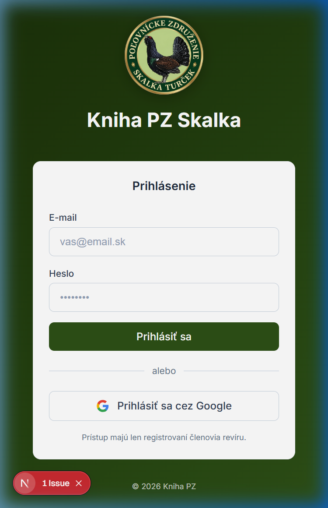
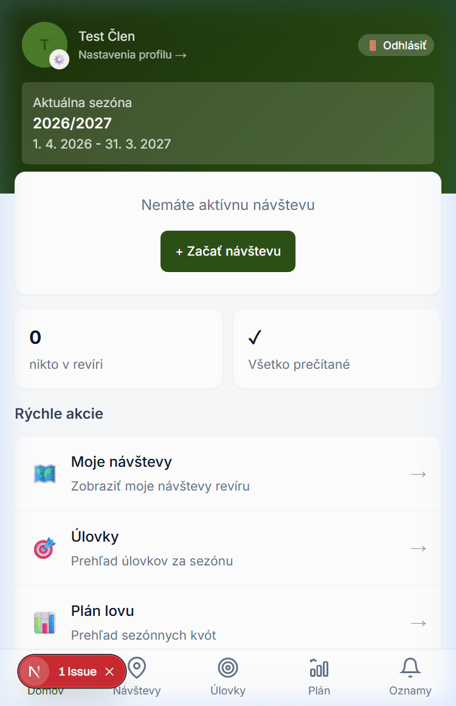
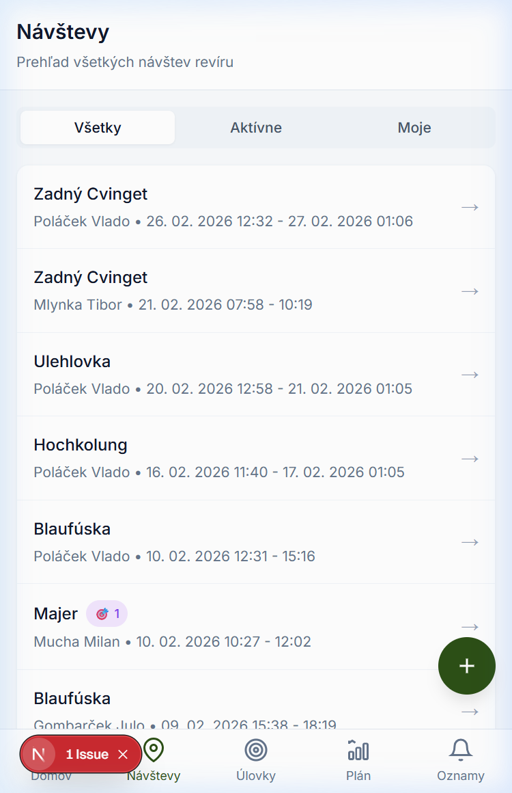
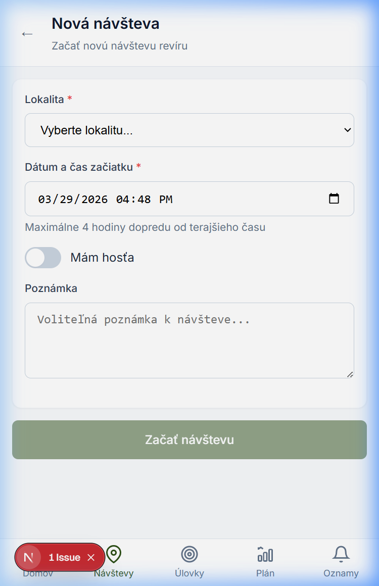
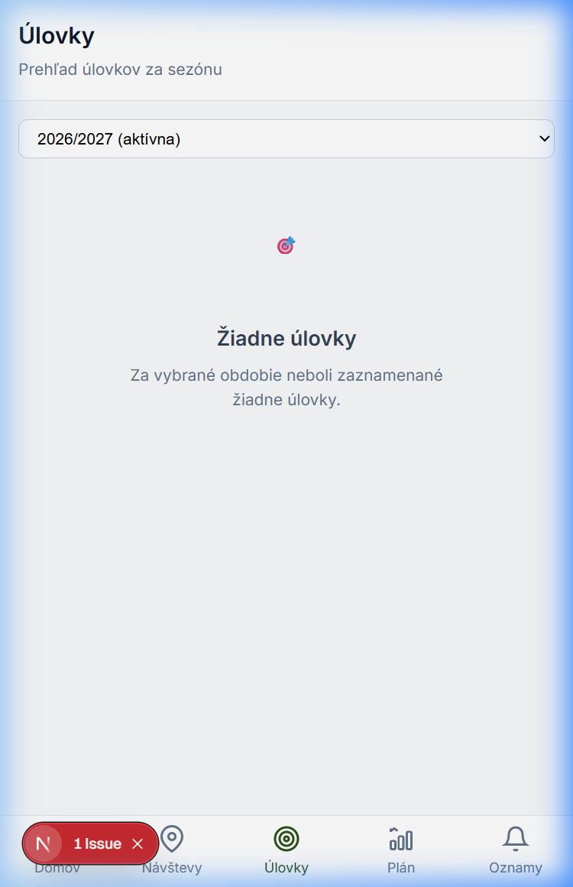
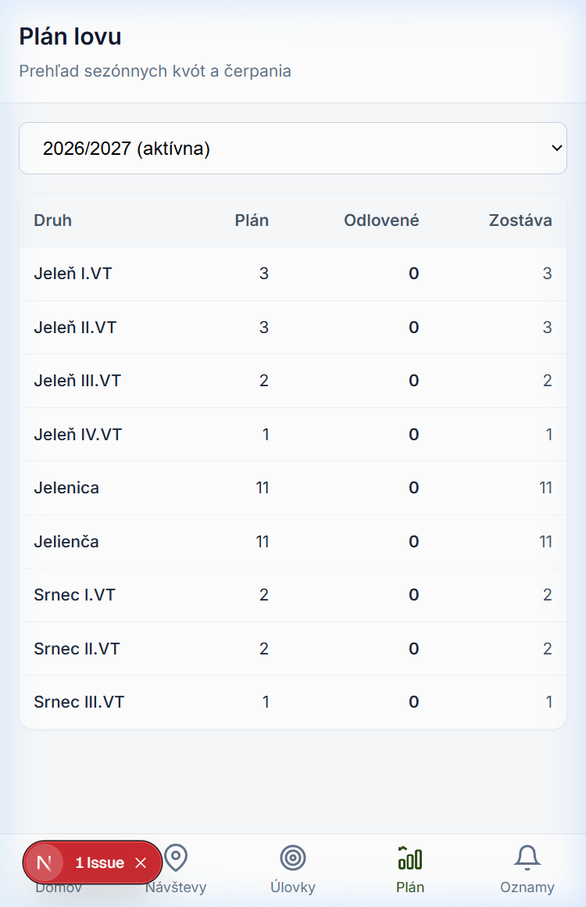
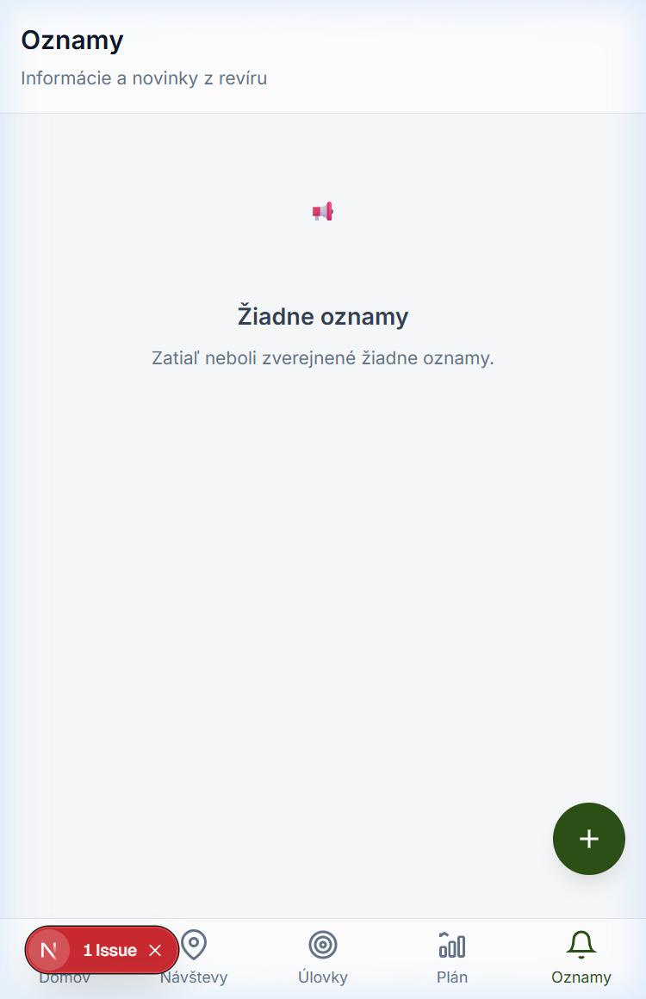
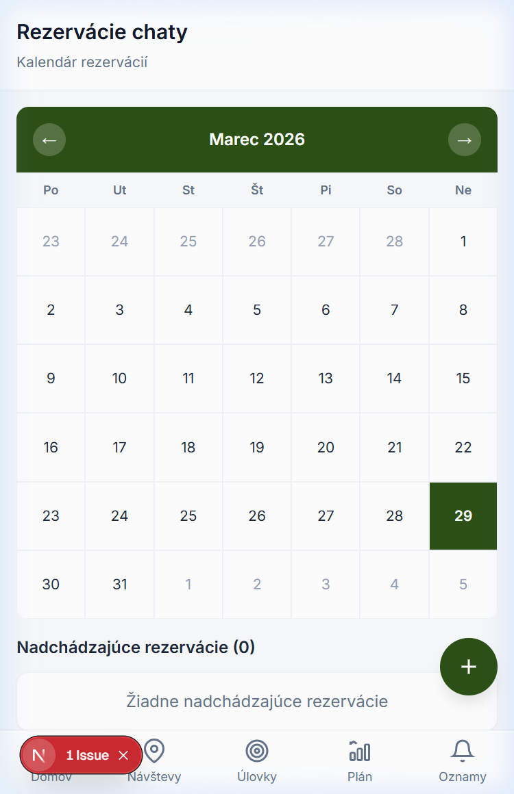
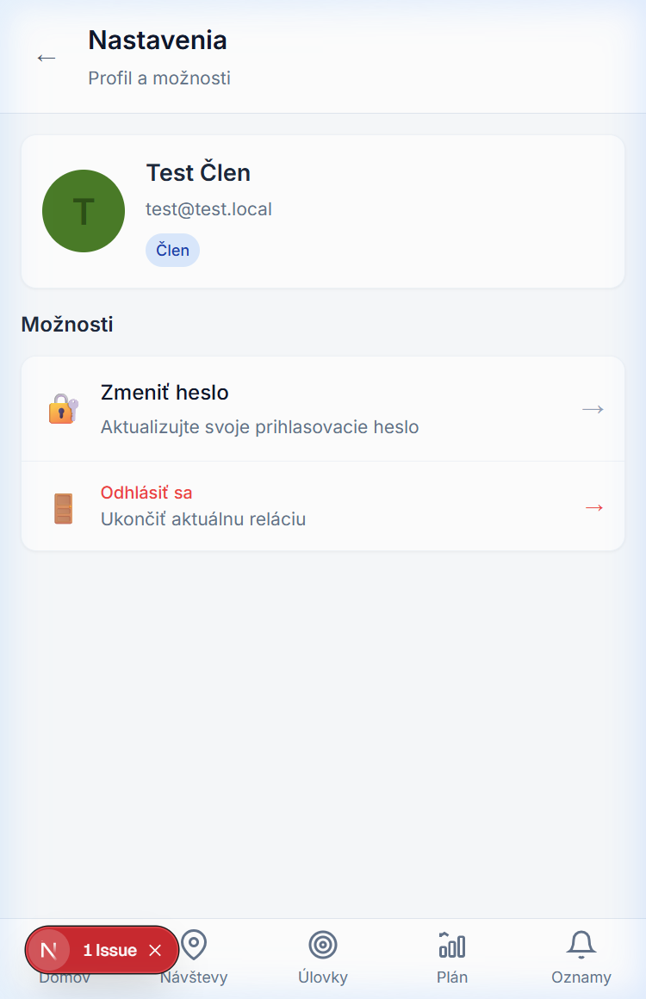

Kompletný sprievodca mobilnou aplikáciou pre členov poľovníckeho združenia
📲
Inštalácia aplikácie (PWA)
Nainštalujte si aplikáciu na telefón
Kniha PZ je progresívna webová aplikácia (PWA) — funguje priamo v prehliadači, ale dá sa nainštalovať na plochu telefónu ako bežná aplikácia. Po inštalácii sa otvára v celoobrazovkovom režime a je k dispozícii aj s obmedzeným pripojením.
🤖 Android
🍎 iOS (iPhone/iPad)
Inštalácia na Android
Otvorte prehliadač Google Chrome na vašom Android zariadení.
Prejdite na adresu aplikácie, ktorú vám poskytol administrátor (napr. https://vasa-domena.sk).
Chrome automaticky zobrazí banner „Pridať na plochu" v dolnej časti obrazovky. Kliknite naň.
Ak sa banner nezobrazí, kliknite na ⋮ (tri bodky) v pravom hornom rohu prehliadača.
Vyberte možnosť „Pridať na plochu" alebo „Nainštalovať aplikáciu".
Potvrďte inštaláciu kliknutím na „Inštalovať".
Ikona aplikácie sa objaví na domovskej obrazovke vášho telefónu.
💡
Po inštalácii sa aplikácia otvára v celoobrazovkovom režime bez adresného riadku prehliadača, rovnako ako natívna aplikácia.
Inštalácia na iPhone / iPad
Otvorte prehliadač Safari na vašom iPhone alebo iPade. (Inštalácia PWA funguje iba v Safari!)
Prejdite na adresu aplikácie, ktorú vám poskytol administrátor.
Kliknite na ikonu Zdieľania (štvorcová ikona so šípkou nahor) v dolnej lište prehliadača.
Scrollujte nadol a vyberte „Na plochu" (Add to Home Screen).
Ponechajte názov aplikácie alebo ho upravte a kliknite „Pridať".
Ikona aplikácie sa objaví na domovskej obrazovke.
⚠️
Dôležité: Na iOS je nutné použiť prehliadač Safari. Chrome ani iné prehliadače na iPhone nepodporujú inštaláciu PWA na plochu.
🔑
Prihlásenie
Ako sa prihlásiť do aplikácie
Prístup do aplikácie majú iba registrovaní členovia poľovníckeho združenia. Váš účet vytvára administrátor.
Prihlásenie e-mailom a heslom
Otvorte aplikáciu alebo prejdite na adresu v prehliadači.
Na prihlasovacej obrazovke zadajte svoj e-mail a heslo, ktoré vám pridelil administrátor.
Kliknite na tlačidlo „Prihlásiť sa".

Prihlasovacia obrazovka aplikácie
Prihlásenie cez Google
Ak máte priradený Google účet, môžete sa prihlásiť aj kliknutím na tlačidlo „Prihlásiť sa cez Google".
💡
Pri prvom prihlásení vás systém môže vyzvať na zmenu hesla. Zadajte nové heslo podľa pokynov na obrazovke.
🏠
Domovská stránka
Prehľad po prihlásení
Po úspešnom prihlásení sa zobrazí domovská stránka s prehľadom najdôležitejších informácií:

Domovská stránka po prihlásení
📅
Aktuálna sezóna
Názov a dátumy aktuálnej poľovníckej sezóny
📍
Aktívna návšteva
Ak máte práve prebiehajúcu návštevu, zobrazí sa tu
👥
Členovia v revíri
Koľko členov je aktuálne v revíri
📢
Neprečítané oznamy
Počet nových neprecítaných oznámov
V sekcii Rýchle akcie nájdete skratky k najpoužívanejším funkciám: Moje návštevy, Úlovky, Plán lovu a Rezervácie chaty.
🧭
Navigácia v aplikácii
Ako sa pohybovať medzi stránkami
V dolnej časti obrazovky sa nachádza navigačný panel s piatimi hlavnými sekciami:
🏠
Domov
📍
Návštevy
🎯
Úlovky
📊
Plán
🔔
Oznamy
Kliknutím na ikonu sa presuniete do príslušnej sekcie. Aktívna sekcia je zvýraznená zelenou farbou. Na ikone Oznamy sa zobrazuje červený badge s počtom neprečítaných oznámov.
💡
Na niektorých stránkach nájdete v pravom dolnom rohu zelené okrúhle tlačidlo „+" — slúži na rýchle pridanie nového záznamu (návšteva, rezervácia atď.).
🗺️
Návštevy revíru
Evidencia príchodov a odchodov
Sekcia Návštevy slúži na evidenciu vašich príchodov do revíru a odchodov z neho. Každá návšteva je priradená ku konkrétnej lokalite.

Prehľad návštev s filtrami
Filtre návštev
V hornej časti stránky sú tri záložky na filtrovanie:
Všetky — zobrazí návštevy všetkých členov.
Aktívne — iba aktuálne prebiehajúce návštevy (členovia práve v revíri).
Moje — iba vaše vlastné návštevy.
Začatie novej návštevy
Na začatie návštevy kliknite na zelené tlačidlo „+" alebo na tlačidlo „+ Začať návštevu" na domovskej stránke.

Formulár pre začatie novej návštevy
Vo formulári vyplňte:
Lokalita — vyberte lokalitu z dostupných (obsadené lokality sú neprístupné).
Dátum a čas začiatku — predvolený je aktuálny čas, môžete upraviť max. 4 hodiny dopredu.
Mám hosťa — prepnutím zapnete formulár pre údaje hosťa (meno, poznámka).
Poznámka — voliteľná poznámka k návšteve.
Ukončenie návštevy
Na stránke detailu návštevy kliknite na tlačidlo „Ukončiť návštevu". Návštevu je možné ukončiť aj s úpravou poznámok. Neukončené návštevy sa automaticky uzatvárajú o polnoci.
Pridanie úlovku k návšteve
Z detailu aktívnej návštevy kliknite na tlačidlo „Pridať úlovok". Vyplňte druh zveri, lokalitu lovu, dátum a prípadne nahrajte fotky.
🎯
Úlovky
Prehľad úlovkov za sezónu
Na stránke Úlovky nájdete kompletný prehľad všetkých úlovkov za vybranú sezónu, zoskupených podľa druhu zveri.

Prehľad úlovkov s filtrom sezóny
Filtrovanie
Na filtrácii môžete zmeniť:
Sezóna — prepnúť medzi aktuálnou a predchádzajúcimi sezónami.
Člen — filtrovať úlovky podľa člena (ak je k dispozícii).
Detail úlovku
Kliknutím na konkrétny úlovok sa dostanete na jeho detail, kde uvidíte všetky informácie vrátane nahraných fotografií. Fotografie je možné prezerať vo fullscreen galérii.
📊
Plán lovu
Sezónne kvóty a čerpanie
Plán lovu zobrazuje tabuľku s plánovanými kvótami pre jednotlivé druhy zveri a ich aktuálne čerpanie.

Tabuľka plánu lovu s kvótami
Tabuľka obsahuje stĺpce:
Druh — názov druhu zveri.
Plán — plánovaný počet kusov na sezónu.
Odlovené — aktuálne odlovený počet.
Zostáva — koľko kusov ešte zostáva. Ak je kvóta prekročená, riadok sa zvýrazní červenou farbou.
⚠️
Ak je pri nejakom druhu zobrazená červená farba, znamená to, že kvóta bola prekročená. Informujte sa u hospodára o ďalšom postupe.
📢
Oznamy
Informácie a novinky z revíru
V sekcii Oznamy nájdete dôležité informácie zdieľané administrátorom a ostatnými členmi.

Stránka Oznamy
Neprečítané oznamy sú zvýraznené tučným písmom a modrou bodkou.
Pripnuté oznamy (📌) sú vždy zobrazené na vrchu zoznamu.
Kliknutím na oznam sa zobrazí jeho plný text, vrátane obrázkov a formátovania.
Počet neprečítaných oznámov sa zobrazuje aj na ikone Oznamy v dolnom navigačnom paneli.
💡
Ak máte povolené push notifikácie, budete dostávať upozornenia na nové oznamy aj keď nemáte aplikáciu otvorenú.
🏠
Rezervácie chaty
Kalendár a správa rezervácií
Sekcia Rezervácie chaty umožňuje prezerať a vytvárať rezervácie poľovníckej chaty.

Kalendár s rezerváciami chaty
Kalendár
Kalendár zobrazuje aktuálny mesiac. Dni s rezerváciou sú označené zelenou bodkou. Šípkami sa prepínate medzi mesiacmi. Dnešný deň je zvýraznený.
Vytvorenie rezervácie
Kliknite na voľný deň v kalendári alebo na zelené tlačidlo „+".
Zobrazí sa dialóg — kliknite „Pokračovať".
Vyplňte dátum ukončenia, voliteľný názov rezervácie a potvrďte.
Zrušenie rezervácie
Kliknutím na deň s rezerváciou alebo zo zoznamu nadchádzajúcich rezervácií sa dostanete na detail, kde môžete vlastnú rezerváciu zrušiť.
⚙️
Nastavenia a profil
Správa profilu a hesla
Do nastavení sa dostanete kliknutím na váš avatar a meno v hornej časti domovskej stránky.

Stránka nastavení profilu
V nastaveniach nájdete:
Profil — vaše meno, e-mail a rola (Člen / Administrátor).
Zmeniť heslo — aktualizujte svoje prihlasovacie heslo zadaním aktuálneho a nového hesla.
Odhlásiť sa — ukončí aktuálnu reláciu. Môžete sa odhlásiť aj z domovskej stránky tlačidlom 🚪 Odhlásiť.
💡
Odporúčame si pri prvom prihlásení zmeniť heslo na vlastné — bezpečné heslo by malo mať aspoň 8 znakov.